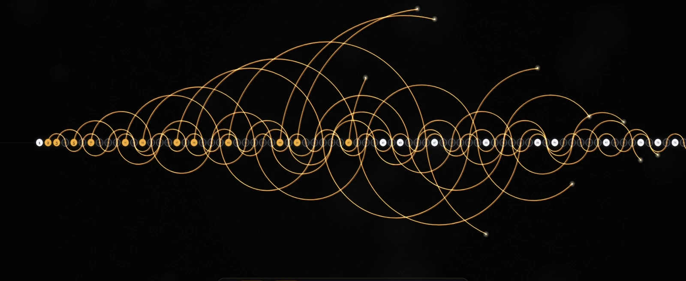
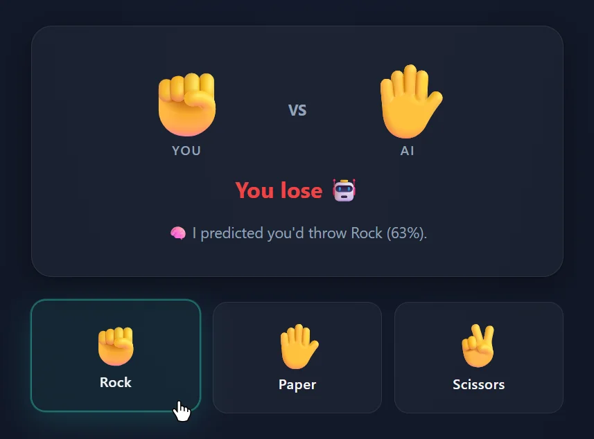
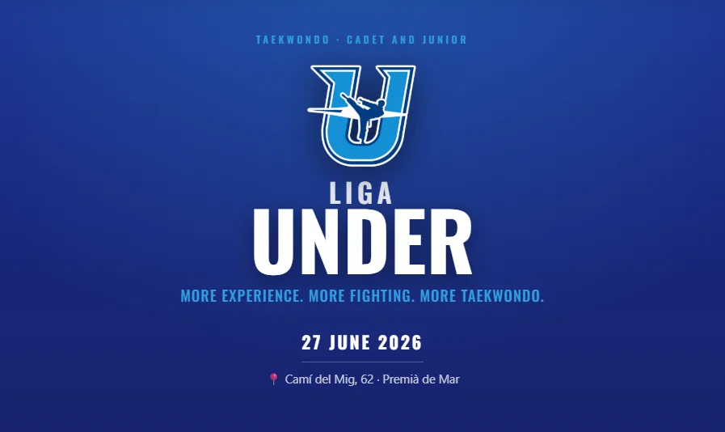
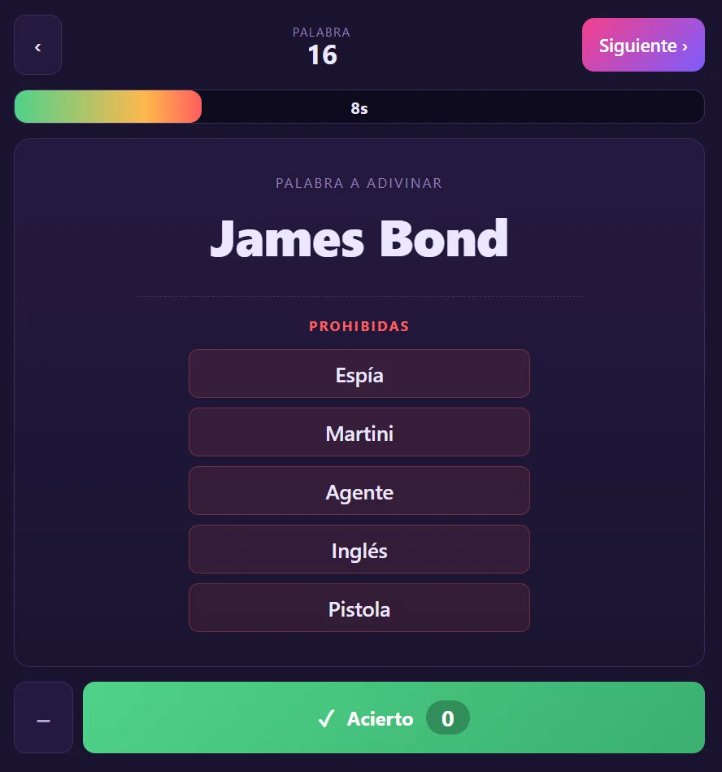
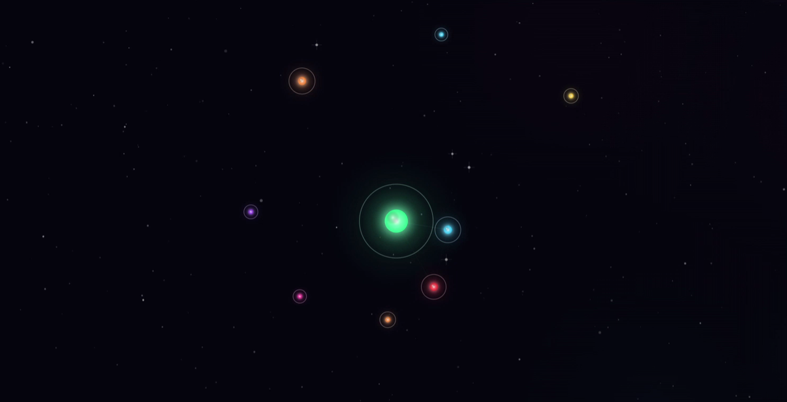
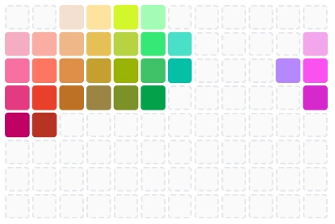
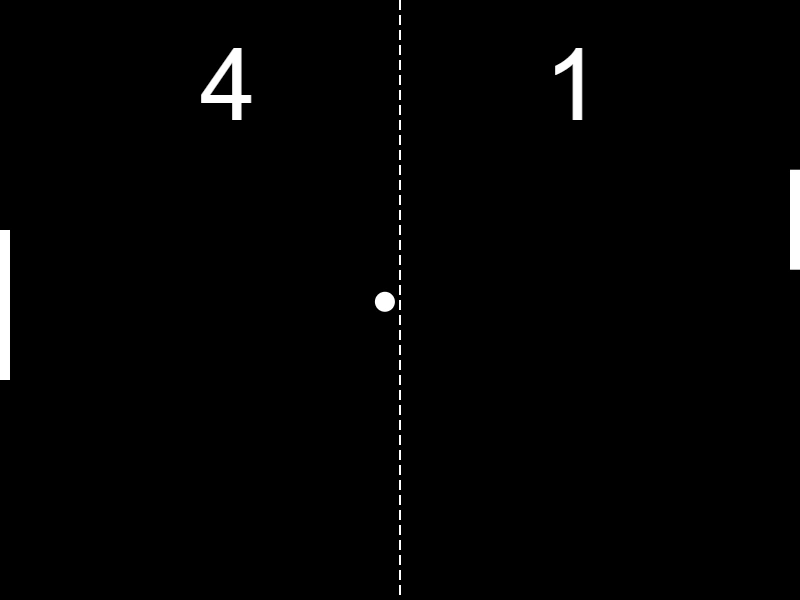

Loading projects…







No projects match your search.
Small experiments, games, and tools that live inside this site. Open any of them right now.
Loading projects…







No projects match your search.